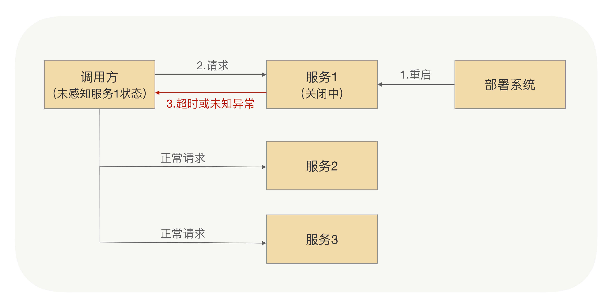
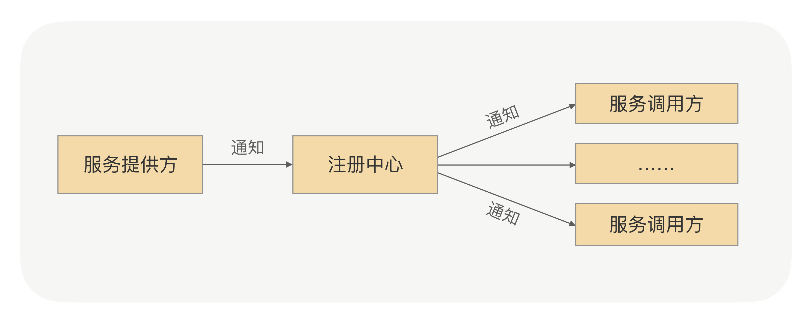
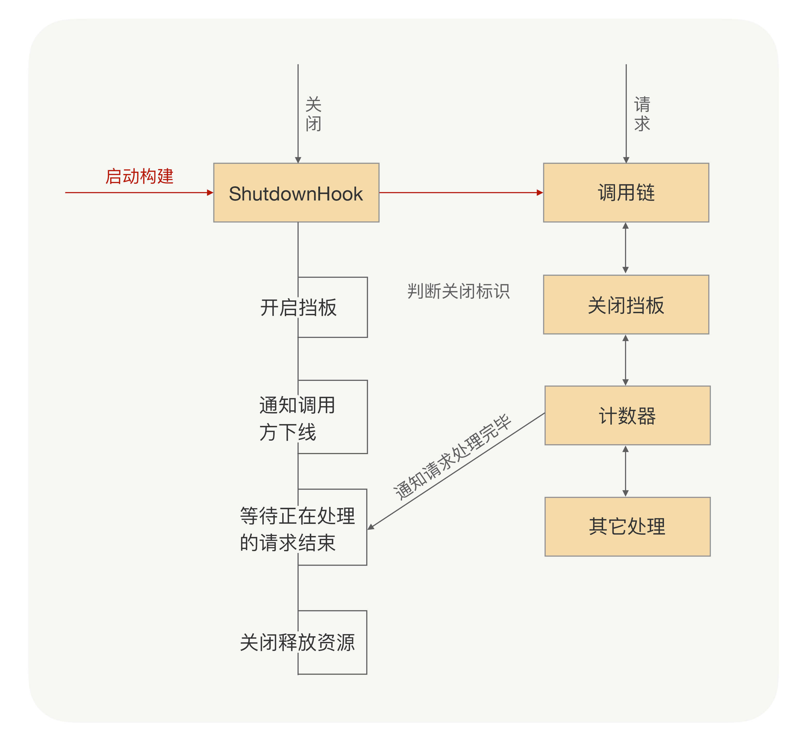

- 00 开篇词 别老想着怎么用好RPC框架，你得多花时间琢磨原理.md.html
- 01 核心原理：能否画张图解释下RPC的通信流程？.md.html
- 02 协议：怎么设计可扩展且向后兼容的协议？.md.html
- 03 序列化：对象怎么在网络中传输？.md.html
- 04 网络通信：RPC框架在网络通信上更倾向于哪种网络IO模型？.md.html
- 05 动态代理：面向接口编程，屏蔽RPC处理流程.md.html
- 06 RPC实战：剖析gRPC源码，动手实现一个完整的RPC.md.html
- 07 架构设计：设计一个灵活的RPC框架.md.html
- 08 服务发现：到底是要CP还是AP？.md.html
- 09 健康检测：这个节点都挂了，为啥还要疯狂发请求？.md.html
- 10 路由策略：怎么让请求按照设定的规则发到不同的节点上？.md.html
- 11 负载均衡：节点负载差距这么大，为什么收到的流量还一样？.md.html
- 12 异常重试：在约定时间内安全可靠地重试.md.html
- 13 优雅关闭：如何避免服务停机带来的业务损失？.md.html
- 14 优雅启动：如何避免流量打到没有启动完成的节点？.md.html
- 15 熔断限流：业务如何实现自我保护_.md.html
- 16 业务分组：如何隔离流量？.md.html
- 17 异步RPC：压榨单机吞吐量.md.html
- 18 安全体系：如何建立可靠的安全体系？.md.html
- 19 分布式环境下如何快速定位问题？.md.html
- 20 详解时钟轮在RPC中的应用.md.html
- 21 流量回放：保障业务技术升级的神器.md.html
- 22 动态分组：超高效实现秒级扩缩容.md.html
- 23 如何在没有接口的情况下进行RPC调用？.md.html
- 24 如何在线上环境里兼容多种RPC协议？.md.html
- 加餐 RPC框架代码实例详解.md.html
- 加餐 谈谈我所经历过的RPC.md.html
- 答疑课堂 基础篇与进阶篇思考题答案合集.md.html
- 结束语 学会从优秀项目的源代码中挖掘知识.md.html
- 捐赠
13 优雅关闭：如何避免服务停机带来的业务损失？
你好，我是何小锋。上一讲我们讲了“异常重试”，总结来说，异常重试就是为了尽最大可能保证接口可用率的一种手段，但这种策略只能用在幂等接口上，否则就会因为重试导致应用系统数据“写花”。
接着昨天的内容，今天我们再来聊聊RPC中的关闭流程。
关闭为什么有问题？
我们知道，在“单体应用”复杂到一定程度后，我们一般会进行系统拆分，也就是时下流行的微服务架构。服务拆分之后，自然就需要协同，于是RPC框架就出来了，它用来解决各个子系统之间的通信问题。
我再倒回来问你一个非常基础的问题？你觉得系统为啥非要拆分呢？从我的角度，如果只说一个原因，我觉得拆分之后我们可以更方便、更快速地迭代业务。那么问题来了，更快速地迭代业务，说人话不就是我会经常更新应用系统，时不时还老要重启服务器吗？
那具体到我们的RPC体系里，你就要考虑，在重启服务的过程中，RPC怎么做到让调用方系统不出问题呢？
要想说明白这事，我们先要简述下上线的大概流程：当服务提供方要上线的时候，一般是通过部署系统完成实例重启。在这个过程中，服务提供方的团队并不会事先告诉调用方他们需要操作哪些机器，从而让调用方去事先切走流量。而对调用方来说，它也无法预测到服务提供方要对哪些机器重启上线，因此负载均衡就有可能把要正在重启的机器选出来，这样就会导致把请求发送到正在重启中的机器里面，从而导致调用方不能拿到正确的响应结果。

在服务重启的时候，对于调用方来说，这时候可能会存在以下几种情况：
- 调用方发请求前，目标服务已经下线。对于调用方来说，跟目标节点的连接会断开，这时候调用方可以立马感知到，并且在其健康列表里面会把这个节点挪掉，自然也就不会被负载均衡选中。
- 调用方发请求的时候，目标服务正在关闭，但调用方并不知道它正在关闭，而且两者之间的连接也没断开，所以这个节点还会存在健康列表里面，因此该节点就有一定概率会被负载均衡选中。
关闭流程
当然还存在目标服务正在启动的情况，如何优雅地启动我会在下一讲详细地讲，这也是重点。今天我们要聚焦讨论的就是当出现第二种情况的时候，在RPC里面怎么避免调用方业务受损。
这时候你可能会想到，我是不是在重启服务机器前，先通过“某种方式”把要下线的机器从调用方维护的“健康列表”里面删除就可以了，这样负载均衡就选不到这个节点了？你说得一点都没错，但这个具体的“某种方式”是怎么完成呢？
最没有效率的办法就是人工通知调用方，让他们手动摘除要下线的机器，这种方式很原始也很直接。但这样对于提供方上线的过程来说太繁琐了，每次上线都要通知到所有调用我接口的团队，整个过程既浪费时间又没有意义，显然不能被正常接受。
这时候，可能你还会想到，RPC里面不是有服务发现吗？它的作用不就是用来“实时”感知服务提供方的状态吗？当服务提供方关闭前，是不是可以先通知注册中心进行下线，然后通过注册中心告诉调用方进行节点摘除？关闭流程如下图所示：

这样不就可以实现不通过“人肉”的方式，从而达到一种自动化方式，但这么做就能完全保证实现无损上下线吗？
如上图所示，整个关闭过程中依赖了两次RPC调用，一次是服务提供方通知注册中心下线操作，一次是注册中心通知服务调用方下线节点操作。注册中心通知服务调用方都是异步的，我们在“服务发现”一讲中讲过在大规模集群里面，服务发现只保证最终一致性，并不保证实时性，所以注册中心在收到服务提供方下线的时候，并不能成功保证把这次要下线的节点推送到所有的调用方。所以这么来看，通过服务发现并不能做到应用无损关闭。
不能强依赖“服务发现”来通知调用方要下线的机器，那服务提供方自己来通知行不行？因为在RPC里面调用方跟服务提供方之间是长连接，我们可以在提供方应用内存里面维护一份调用方连接集合，当服务要关闭的时候，挨个去通知调用方去下线这台机器。这样整个调用链路就变短了，对于每个调用方来说就一次RPC，可以确保调用的成功率很高。大部分场景下，这么做确实没有问题，我们之前也是这么实现的，但是我们发现线上还是会偶尔会出现，因为服务提供方上线而导致调用失败的问题。
那到底哪里出问题了呢？我后面分析了调用方请求日志跟收到关闭通知的日志，并且发现了一个线索如下：出问题请求的时间点跟收到服务提供方关闭通知的时间点很接近，只比关闭通知的时间早不到1ms，如果再加上网络传输时间的话，那服务提供方收到请求的时候，它应该正在处理关闭逻辑。这就说明服务提供方关闭的时候，并没有正确处理关闭后接收到的新请求。
优雅关闭
知道了根本原因，问题就很好解决了。因为服务提供方已经开始进入关闭流程，那么很多对象就可能已经被销毁了，关闭后再收到的请求按照正常业务请求来处理，肯定是没法保证能处理的。所以我们可以在关闭的时候，设置一个请求“挡板”，挡板的作用就是告诉调用方，我已经开始进入关闭流程了，我不能再处理你这个请求了。
如果大家经常去银行办理业务，就会很熟悉这个流程。在交接班或者有其他要事情处理的时候，银行柜台工作人员会拿出一个纸板，放在窗口前，上面写到“该窗口已关闭”。在该窗口排队的人虽然有一万个不愿意，也只能换到其它窗口办理业务，因为柜台工作人员会把当前正在办理的业务处理完后正式关闭窗口。
基于这个思路，我们可以这么处理：当服务提供方正在关闭，如果这之后还收到了新的业务请求，服务提供方直接返回一个特定的异常给调用方（比如ShutdownException）。这个异常就是告诉调用方“我已经收到这个请求了，但是我正在关闭，并没有处理这个请求”，然后调用方收到这个异常响应后，RPC框架把这个节点从健康列表挪出，并把请求自动重试到其他节点，因为这个请求是没有被服务提供方处理过，所以可以安全地重试到其他节点，这样就可以实现对业务无损。
但如果只是靠等待被动调用，就会让这个关闭过程整体有点漫长。因为有的调用方那个时刻没有业务请求，就不能及时地通知调用方了，所以我们可以加上主动通知流程，这样既可以保证实时性，也可以避免通知失败的情况。
说到这里，我知道你肯定会问，那要怎么捕获到关闭事件呢？
在我的经验里，可以通过捕获操作系统的进程信号来获取，在Java语言里面，对应的是Runtime.addShutdownHook方法，可以注册关闭的钩子。在RPC启动的时候，我们提前注册关闭钩子，并在里面添加了两个处理程序，一个负责开启关闭标识，一个负责安全关闭服务对象，服务对象在关闭的时候会通知调用方下线节点。同时需要在我们调用链里面加上挡板处理器，当新的请求来的时候，会判断关闭标识，如果正在关闭，则抛出特定异常。
看到这里，感觉问题已经比较好地被解决了。但细心的同学可能还会提出问题，关闭过程中已经在处理的请求会不会受到影响呢？
如果进程结束过快会造成这些请求还没有来得及应答，同时调用方会也会抛出异常。为了尽可能地完成正在处理的请求，首先我们要把这些请求识别出来。这就好比日常生活中，我们经常看见停车场指示牌上提示还有多少剩余车位，这个是如何做到的呢？如果仔细观察一下，你就会发现它是每进入一辆车，剩余车位就减一，每出来一辆车，剩余车位就加一。我们也可以利用这个原理在服务对象加上引用计数器，每开始处理请求之前加一，完成请求处理减一，通过该计数器我们就可以快速判断是否有正在处理的请求。
服务对象在关闭过程中，会拒绝新的请求，同时根据引用计数器等待正在处理的请求全部结束之后才会真正关闭。但考虑到有些业务请求可能处理时间长，或者存在被挂住的情况，为了避免一直等待造成应用无法正常退出，我们可以在整个ShutdownHook里面，加上超时时间控制，当超过了指定时间没有结束，则强制退出应用。超时时间我建议可以设定成10s，基本可以确保请求都处理完了。整个流程如下图所示。

总结
在RPC里面，关闭虽然看似不属于RPC主流程，但如果我们不能处理得很好的话，可能就会导致调用方业务异常，从而需要我们加入很多额外的运维工作。一个好的关闭流程，可以确保使用我们框架的业务实现平滑的上下线，而不用担心重启导致的问题。
其实“优雅关闭”这个概念除了在RPC里面有，在很多框架里面也都挺常见的，比如像我们经常用的应用容器框架Tomcat。Tomcat关闭的时候也是先从外层到里层逐层进行关闭，先保证不接收新请求，然后再处理关闭前收到的请求。
课后思考
今天我只讲了优雅关闭，其实应用重启上下线的时候，还涉及到应用启动流程。那么如何做到优雅启动，避免请求分发到没有就绪的服务节点呢？请你先自行考虑一下，我会在下一讲给你细说。
当然，也欢迎你留言先和我分享你的思考和疑惑，也欢迎你把文章分享给你的朋友，邀请他加入学习。我们下节课再见！
© 2019 - 2023 Liangliang Lee. Powered by gin and hexo-theme-book.